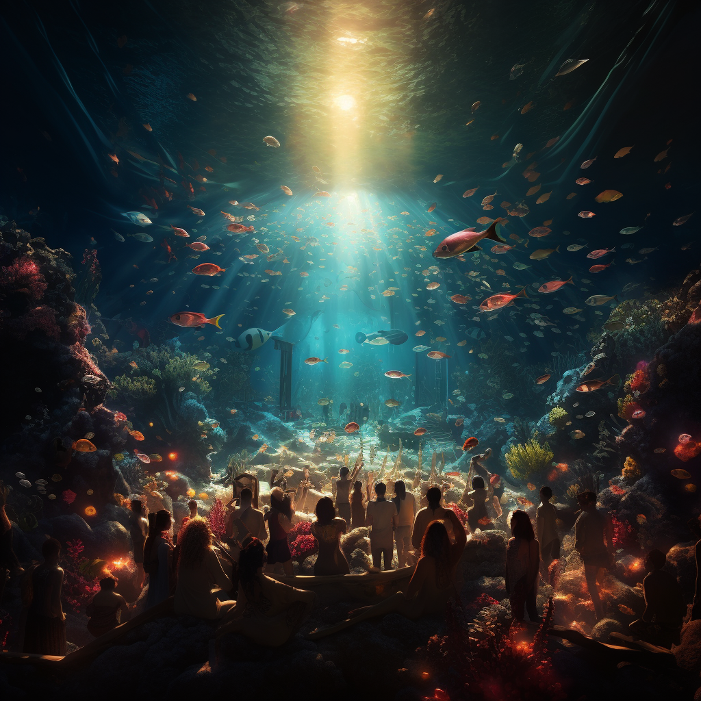

Subterranean Soundwaves
Get ready to rock out at Subterranean Soundwaves, an electrifying underground concert extravaganza held in the depths of your theme park. Immerse yourself in an underground realm of pulsating music, mesmerizing lights, and an atmosphere that ignites the senses.
Date: May 24, 2024
Time: 10:00 AM - 6:00 PM
Location: Poseidon's Paradise
Subterranean Soundwaves is a one-of-a-kind concert event that brings together renowned artists and music enthusiasts in an unforgettable underground setting. Witness the fusion of incredible performances, cutting-edge sound technology, and an intimate atmosphere that will leave you craving more.
- Stellar Lineup of Artists: Experience the energy of top musical acts as they take the stage in the underground concert arena. From chart-topping bands to talented solo artists, Subterranean Soundwaves showcases a diverse range of genres, ensuring there's something for every music lover.
- State-of-the-Art Sound and Lighting: Be blown away by the immersive audiovisual experience created by cutting-edge sound systems and mesmerizing lighting effects. The underground venue enhances the acoustics, allowing you to feel the music pulsating through your entire being.
- Intimate Concert Atmosphere: Enjoy an up-close and personal experience with the artists in an intimate setting. The underground venue creates a unique ambiance, bringing you closer to the music, creating a connection that transcends the ordinary concert experience.
- Interactive Activities and Merchandise: Engage in interactive activities and explore merchandise booths where you can get your hands on exclusive concert memorabilia. Take home a piece of the event and create lasting memories with friends and fellow music enthusiasts.
- Gourmet Food and Beverages: Savor a wide array of gourmet food and beverages available at the event. From delicious street food to craft beverages, there's something to satisfy every palate and keep you energized throughout the night.
Registration
Secure your spot now for Underwater Santa's Magical Village!
Register Now